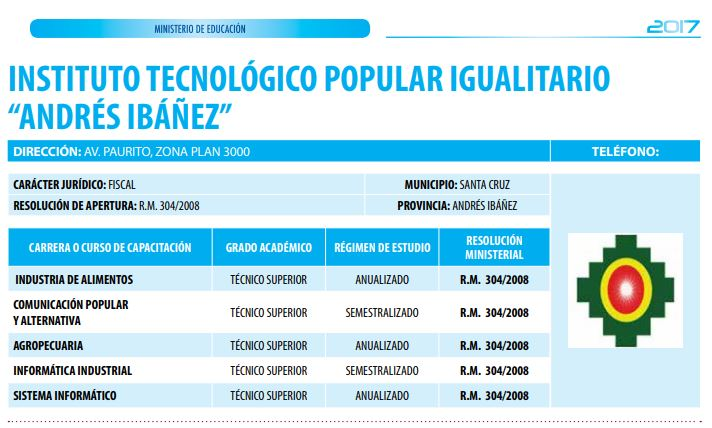

Quiénes Somos
Somos una instituto dedicada a ofrecer soluciones innovadoras en tecnología. Nuestro equipo está compuesto por profesionales apasionados y comprometidos con la excelencia.
Nuestra misión es proporcionar productos y servicios de alta calidad que superen las expectativas de nuestros clientes.
Historia
El Instituto Tecnológico Popular Igualitario Andrés Ibáñez, nace originalmente a la vida pública en la fecha 09 de Agosto de 2007 como "Instituto Tecnológico Andrés Ibáñez" con la finalidad de implementar y desarrollar carreras a nivel Técnico Superior para fomentar el desarrollo de la Educación Técnico Profesional.
Cuenta con Personalidad Juridica, a través de la Resolución Ministerial 304/8 de fecha 09 de Agosto de 2007, desde entonces asume un papel, preponderante en la profesionalización y perfeccionamiento de miles de ciudadanos formados bajo el lema aprender haciendo. Comenzo el 2007 con 450 alumnos, en el año 2019 ha finalizado con más de 4.800 inscritos.
Actualidad del Tecnòlogico Popular Igualitario Andres Ibañez
Actualmente el Tecnòlogico Popular Igualitario Andres Ibañez Cuenta con 500 Estuantes, 30 Docentes y 4 Administrativos
Oferta 7 Carreras a Nivel Tecnico Superior
-sistemas informaticos
-comunicacion popular
-electronica
-comunicacion popular
-informatica industrial
-gastronomia
-industria de alimentos
-Agropecuaria
Vision
Bajo el contexto del proyecto educativo de tres años y dentro del marco PGDES, PDES, PTDI y Reglamento General de Institutos Nº 350 el ITPIAI define su visión para el 2023 es:
Ser una institución referente en la Formación Superior Técnica y Tecnológica, desarrollando e incubando MYPES con innovación creativa para el desarrollo sociocomunitario, mejorando el acceso al empleo de sus alumnos para el Vivir Bien.
Mision
Formar profesionales técnicos, tecnológicos y competentes, capaces de responder de manera eficaz y eficiente a las necesidades a los retos locales, regionales y nacionales con calidad, productividad, desde una perspectiva, comunitaria, analítica, critica, valorando los conocimientos ancestrales y respeto a la Madre tierra.
Fomentando la participación continua de las instituciones y organizaciones sociales, generando oportunidades para la creación de MYPES competitivas y sustentables a través de capacitaciones y asistencia técnica, tecnológica y la CREACION DE UNA MYPE DEL ITPIAI de esta manera mejorar los procesos de formación.
Valores
A fin de guiar y orientar las acciones en los procesos enseñanza-aprendizaje, generación del conocimiento e innovación tecnológica, el personal académico y administrativo adopta los siguientes valores que permiten el cumplimiento de la Misión y Visión del ITTPRH y estos son: Orgulloso de su cultura, La calidad, El ser humano, El espíritu de servicio, Respeto a la Diversidad, Seguridad, Respeto a la Madre Tierra, Lealtad, Honestidad, Responsabilidad, Compromiso y Ética profesional.
Rector: Ing. Brayan Oni Beltrán Rivera.
Administrativa: Lic. Carla Yamilé Miranda Aguilar.
Resolucion MInisterial
Contamos con Resolución Ministerial "Descargar Resolución Ministerial"
